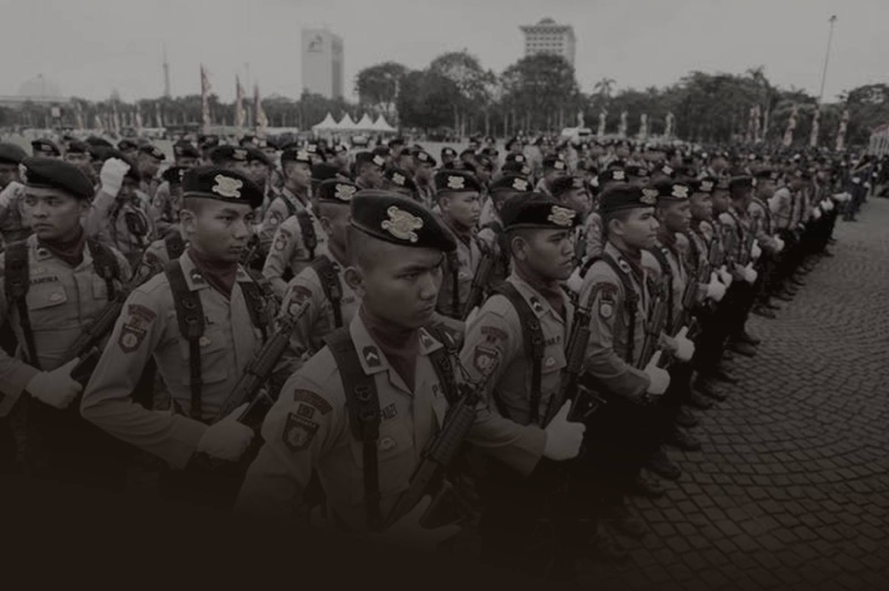
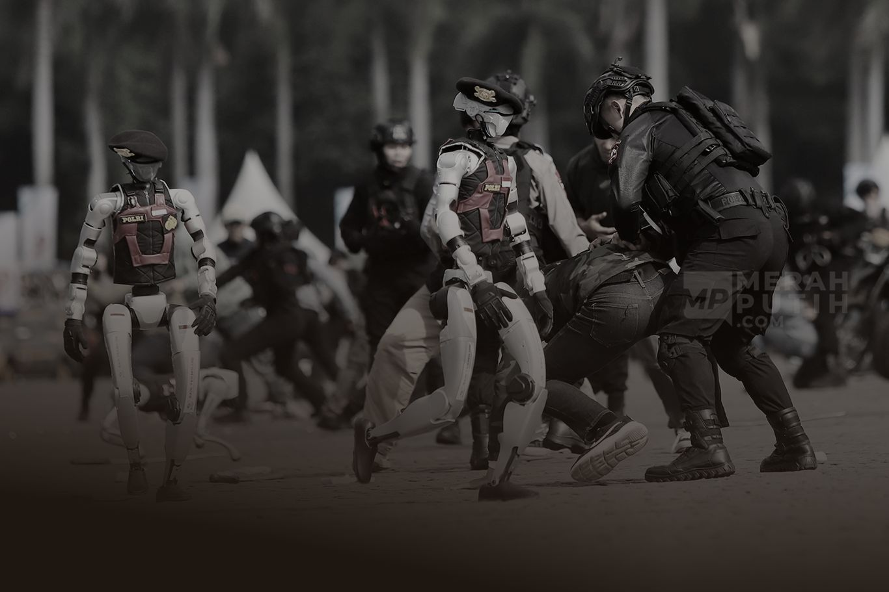
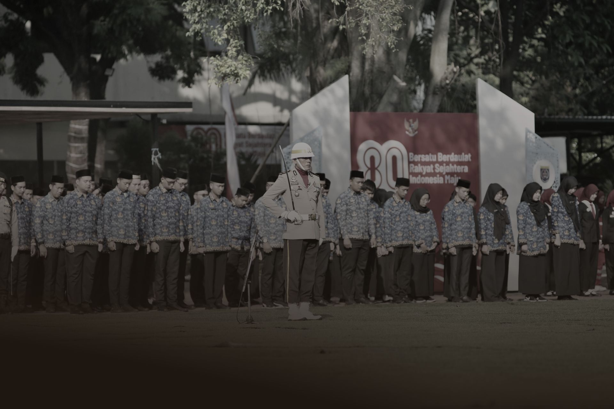

 Kepolisian Sektor Kapuas Tengah
Kepolisian Sektor Kapuas Tengah
Polisi bersama masyarakat, Isen Mulang menjaga.
Pusat informasi dan layanan digital untuk masyarakat Kecamatan Kapuas Tengah, Kabupaten Kapuas.
Lihat layananBantu kami menemukan mereka.
Siaga 24 jam
Cepat hadir saat Anda membutuhkan.
Hubungi 110 untuk keadaan darurat, atau datang ke SPKT Polsek di Pujon kapan saja.
Kontak penting
Pelayanan yang makin modern.
Booking kunjungan, kirim pengaduan, dan pantau tiket Anda langsung dari ponsel.
Booking kunjungan
Hadir di setiap desa.
Bhabinkamtibmas siap mendengar laporan dan aspirasi warga di 13 desa Kapuas Tengah.
Cari BhabinkamtibmasBuka lahan tanpa bakar
Musim kemarau rawan kebakaran hutan dan lahan. Jangan membersihkan lahan dengan cara membakar, dan segera laporkan titik api ke 110 atau Bhabinkamtibmas desa Anda.

Hadir lebih dekat untuk masyarakat Kapuas Tengah
[Sambutan singkat Kapolsek, dua sampai tiga kalimat: komitmen pelayanan yang humanis sebagai polisi bersama masyarakat, keterbukaan, serta ajakan menjaga kamtibmas bersama.]
Kabar terbaru dari Polsek Kapuas Tengah

Polisi peduli pengangguran, Kapolsek Kapuas Tengah hadirkan pendekatan humanis dan bangun kedekatan dengan masyarakat
Program Polisi Peduli Pengangguran (POLIRAN) digelar di Desa Pujon untuk membuka ruang dialog dengan warga.
Baca di analisnews.co.id ↗
Bahu membahu, Kapolres Kapuas bersama Kapolsek Kapuas Tengah dan tim gabungan padamkan api yang menghanguskan hutan di dekat permukiman Desa Pujon
Sekitar 2,5 hektare hutan terbakar di dekat permukiman. Warga diimbau tidak membuka lahan dengan cara membakar.
Baca di analisnews.co.id ↗
Kapolsek Kapuas Tengah kumpul bersama masyarakat, perkuat silaturahmi dan kerja sama harkamtibmas
Kapolsek menyapa warga di Pasar Dayak Pujon dan mengajak bersama menjaga keamanan lingkungan.
Baca di analisnews.co.id ↗Ikuti kegiatan kami setiap hari
Kegiatan harian, imbauan kamtibmas, dan informasi layanan terbaru dari Polsek Kapuas Tengah.
@polsek.kapuas.tengahSampaikan laporan dan aspirasi Anda
Identitas boleh dikosongkan. Cantumkan nomor HP jika ingin memantau status pengaduan dengan nomor tiket.
- Isi formulir pengaduan
- Terima nomor tiket
- Pantau status penanganan
Formulir ini bukan untuk keadaan darurat. Untuk kejadian yang sedang berlangsung, hubungi 110.
Jl. Damang Raban No. 01 RT 002, Desa Pujon, Kec. Kapuas Tengah, Kab. Kapuas, Kalimantan Tengah 73555Petunjuk arah ↗
Kecamatan Kapuas Tengah
Desa dan Bhabinkamtibmas
- Bajuh[Bhabinkamtibmas]
- Barunang[Bhabinkamtibmas]
- Buhut Jaya[Bhabinkamtibmas]
- Hurung Pukung[Bhabinkamtibmas]
- Karukus[Bhabinkamtibmas]
- Kayu Bulan[Bhabinkamtibmas]
- Kota Baru[Bhabinkamtibmas]
- Manis[Bhabinkamtibmas]
- Marapit[Bhabinkamtibmas]
- Masaran[Bhabinkamtibmas]
- Penda Muntei[Bhabinkamtibmas]
- Pujon[Bhabinkamtibmas]
- Tapen[Bhabinkamtibmas]
- Desa Kaltung[Bhabinkamtibmas]
Bhabinkamtibmas yang tercatat dalam pemberitaan: Bripka Hansen S.B. dan Aipda Fordiansyah. Penugasan per desa menunggu data resmi Polsek. Desa persiapan Pujon Sebrang dibentuk pada 2025.
Kontak resmi
Bantu kami menemukan mereka
 POLRI
POLRIPENCARIAN ORANG
Lihat daftar DPO
Daftar orang yang dicari polisi di wilayah hukum Polsek Kapuas Tengah.
↳ Lihat daftarPOLRIHILANG
Lihat orang hilang
Informasi warga yang dilaporkan hilang. Bantu kami mempertemukan mereka dengan keluarga.
↳ Lihat daftarJika Anda melihat orang dalam daftar ini, jangan bertindak sendiri. Hubungi 110 atau Polsek Kapuas Tengah.